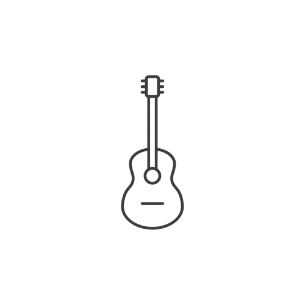

Origem
Orquestra
Violão

As maravilhas da musica clássica
Esse blog nasceu com o objetivo de incentivar a cultura da música clássica no nosso país e ajudar quem tem esse interesse a se desenvolver
E mesmo que você não tenha contato, mas tem curiosidade tenho certeza que essa página vai te ajudar
Mas afinal...
O que é música clássica?